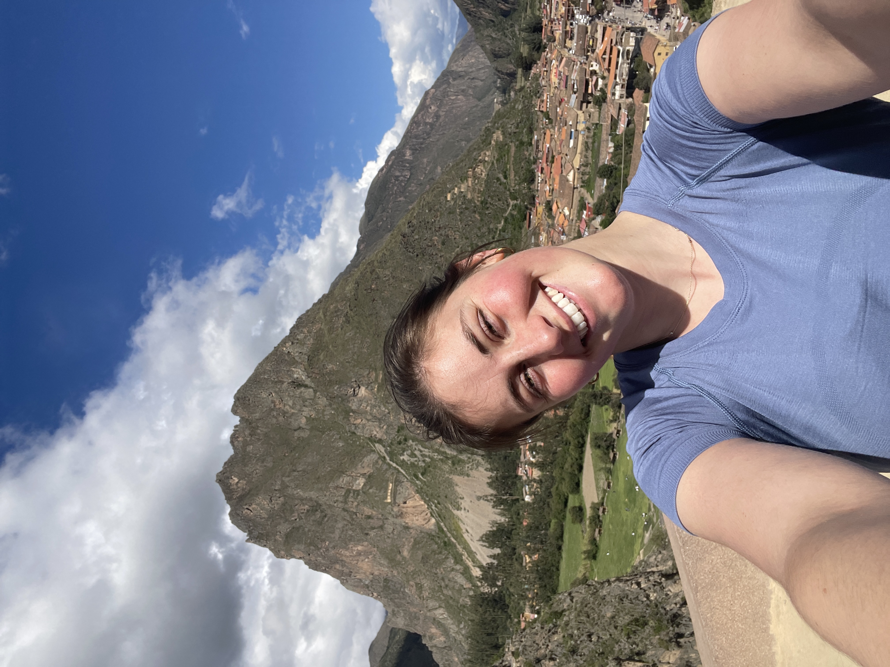
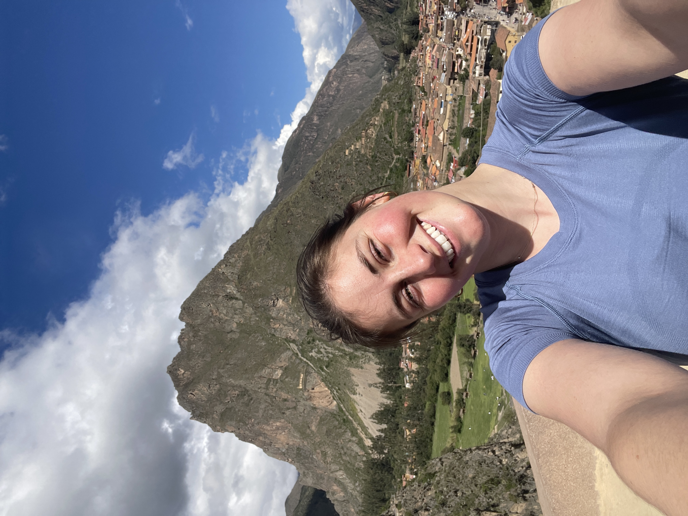

Our Team
Benjamin Sinder, PhD
Principal Investigator | Assistant Professor of Orthopaedics
Ben is an assistant professor of orthopedics at the University of Connecticut Health Center, has a joint appointment in Biomedical Engineering at UConn, and also directs the microCT imaging core. Ben majored in Biomedical Engineering at Case Western Reserve University where he was captain of the tennis team (go spartans) and played in the orchestra. After that, Ben received his PhD from the University of Michigan and did 2 postdocs in skeletal biology. Outside of the lab Ben started playing tennis again and races sailboats.
Lab Members
 

Jenny Alaska
Biomedical Engineering
Jenny is a Biomedical Engineering major at UConn in the Honors Program and grew up in southern Connecticut! She tutors Math at UConn through the Q Center and plays on the Women's Club Soccer team. In the lab, Jenny studies the response of the skeleton to mechanical loading using a variety of genetic mouse models. Outside of research, she is an EMT and enjoys staying active!

Anthony Zuo
Molecular & Cell Biology
Anthony is a UConn Molecular & Cell Biology + Physiology & Neurobiology major and comes to us from the San Francisco Bay Area! Anthony has a strong interest in rare diseases and works on projects related to osteogenesis imperfecta and characterizing skeletal growth. Anthony is also an RA on campus, is working on his Michelin star, and is a hooper. The lab also let him win at minigolf and bowling.